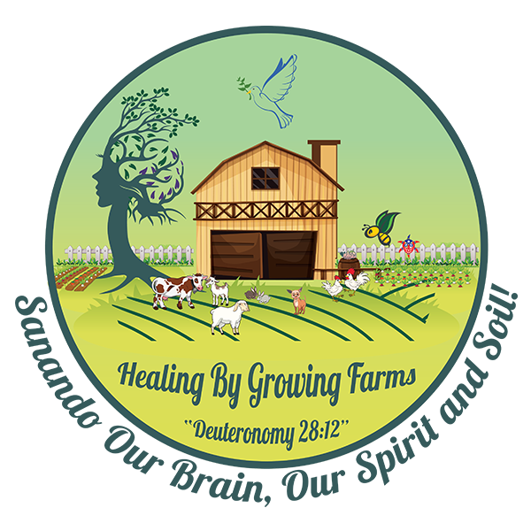

Against the Grain Community

Healing by Growing Farms is a BIPOC-owned urban farm in East Haven that provides free, therapeutic support for brain injury and trauma survivors through experiential farming and agriculture therapy. The organization believes in the healing power of soil and growth — offering a restorative space where people of all abilities can reconnect with the land, find community, and begin to heal. They also provide consulting services to help other farms and organizations build more inclusive, accessible spaces for everyone.
En españolHealing by Growing Farms es una granja urbana de propiedad BIPOC en East Haven que brinda apoyo terapéutico gratuito a sobrevivientes de lesiones cerebrales y traumas a través de la agricultura experiencial y la terapia agrícola. La organización cree en el poder sanador de la tierra y el crecimiento, ofreciendo un espacio restaurador donde personas de todas las capacidades pueden reconectarse con la tierra, encontrar comunidad y comenzar a sanar. También ofrecen servicios de consultoría para ayudar a otras granjas y organizaciones a construir espacios más inclusivos y accesibles para todos.
Visit Website